Valeria Rojas · Diseñadora gráfica digital · Portafolio 2026
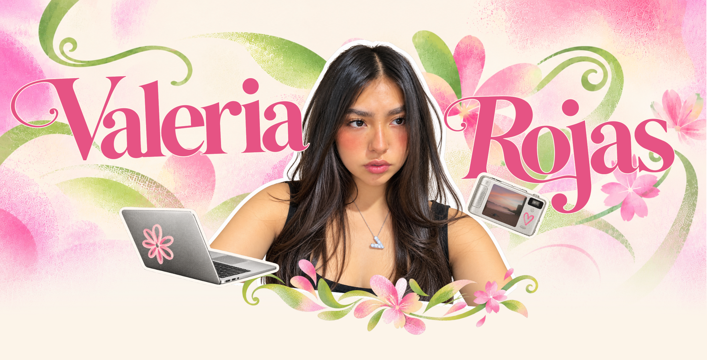
01 — Sobre mí
Un poco sobre mí
Soy Valeria Rojas, diseñadora gráfica digital. Me encanta transformar ideas en propuestas visuales que conecten con las personas.
Me gusta pensar en el diseño como una forma de explorar, comunicar y dar vida a nuevas ideas. Disfruto experimentar con diferentes estilos, técnicas y herramientas para encontrar soluciones visuales que tengan identidad y propósito.
Mi proceso creativo parte de la curiosidad, la atención a los detalles y las ganas de probar nuevas posibilidades. Busco que cada proyecto tenga su propia personalidad, equilibrando creatividad, estética y funcionalidad.
Intereses creativos
- Ilustración
- UX / UI
- Identidad visual
- Diseño interactivo
- Experimentación visual
“Diseñar es explorar, comunicar y dar vida a nuevas ideas.”
02 — Proyectos
Ideas hechas realidad
Una selección de proyectos donde las ideas se transforman en propuestas visuales. Cada uno representa una oportunidad para explorar, experimentar y encontrar nuevas formas de comunicar.
Usa las flechas izquierda y derecha del teclado, o desliza, para recorrer los proyectos.
-
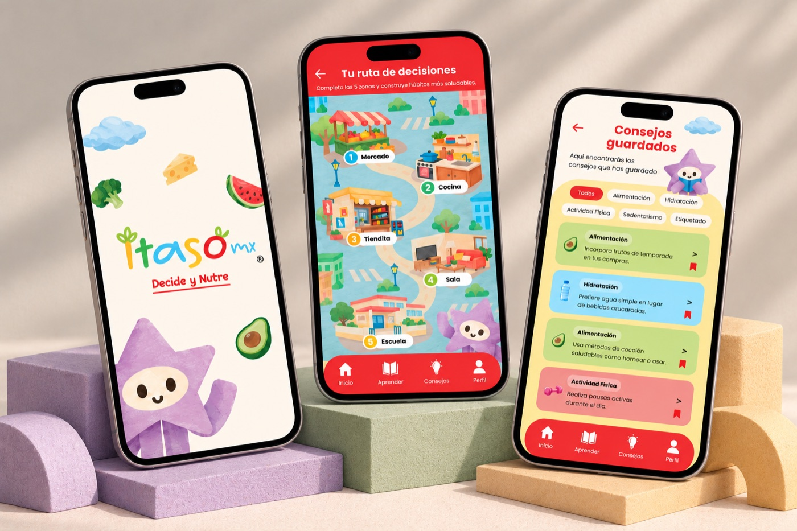
ITASO
Experiencia digital interactiva que acerca la educación nutricional a las familias de manera visual, dinámica y accesible.
-
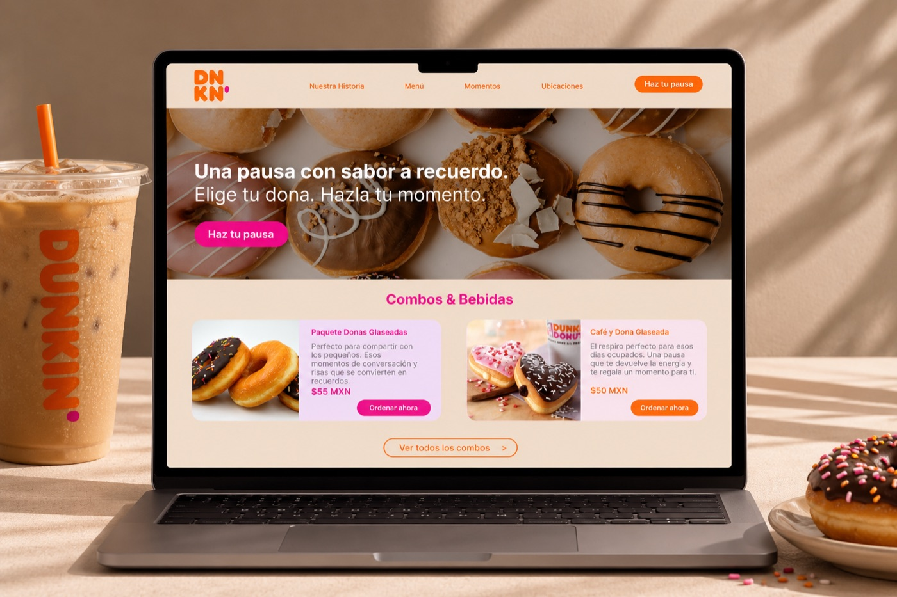
Dunkin'
Propuesta de sitio web que organiza el menú y los momentos de la marca en una navegación clara y visual.
-
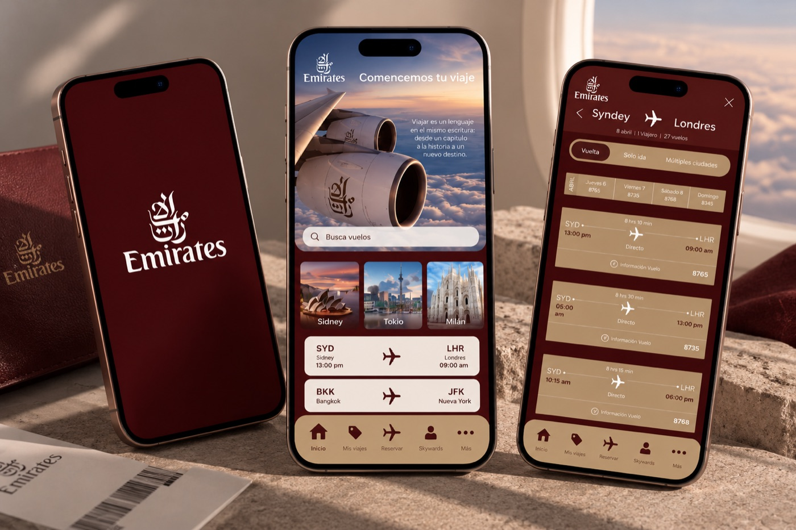
Emirates
Exploración de interfaz móvil enfocada en la claridad de la información y en un recorrido fluido para el usuario.
-
CoreFrost
Sistema de empaque que ordena la línea de productos y refuerza la presencia de la marca en el punto de venta.
-
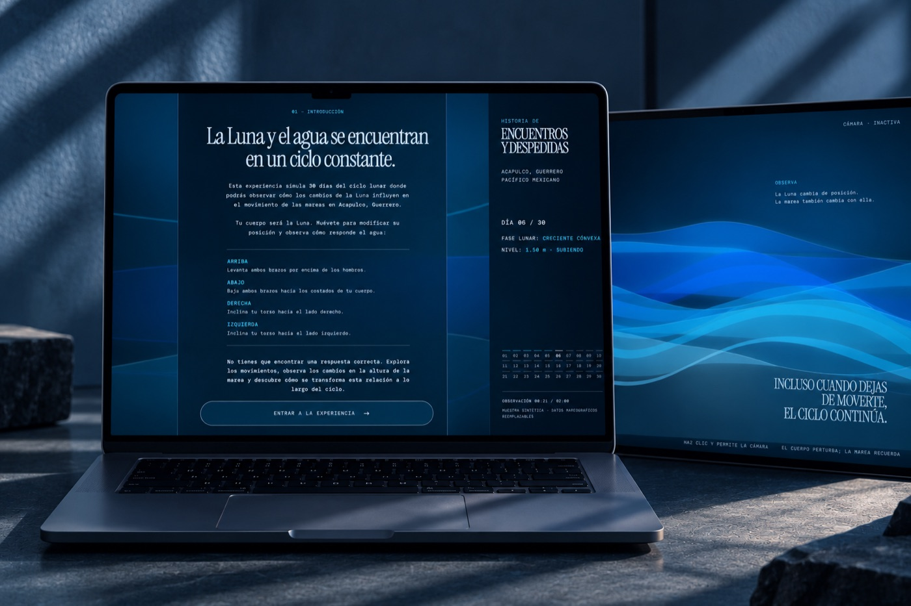
Encuentros y despedidas
Pieza interactiva que explora el relato y la emoción a través del movimiento y la participación del usuario.
-
Personaje y paisaje
Serie de ilustraciones que construye un personaje y su entorno con una paleta y un trazo propios.
-
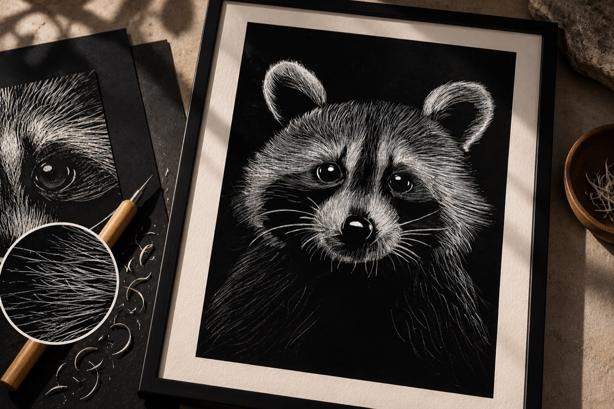
Esgrafiado
Ejercicio analógico que explora la textura y el trazo a partir de la técnica del esgrafiado.
-
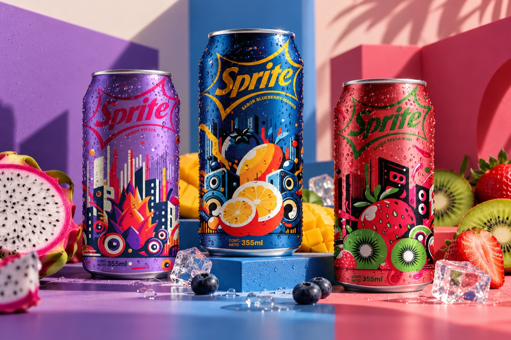
Latas de Sprite
Intervención ilustrada sobre latas que reinterpreta la identidad de la marca con un enfoque gráfico y colorido.
03 — Recorrido creativo
Mi recorrido creativo
Un recorrido por las áreas que he explorado y las que me gustaría seguir descubriendo.
-
Etapa 01
Identidad visual y branding
He explorado el diseño de identidad visual, propuestas digitales y packaging.
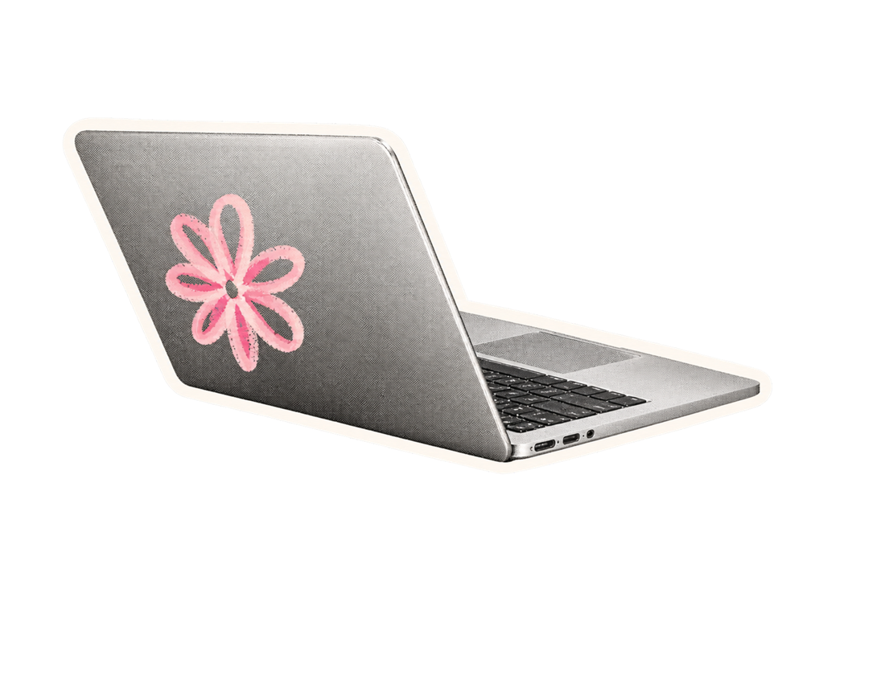
-
Etapa 02
Ilustración y expresión gráfica
Me interesa crear universos visuales a través de la ilustración, explorando desde personajes infantiles hasta paisajes y fantasía.
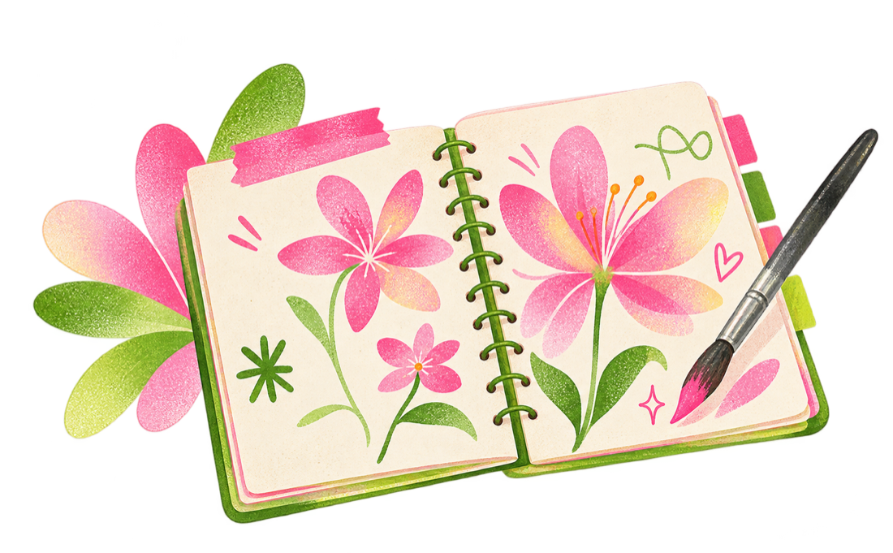
-
Etapa 03
Diseño digital e interactivo
He trabajado en propuestas de UX/UI, diseño de información y experiencias interactivas, buscando combinar funcionalidad y creatividad.
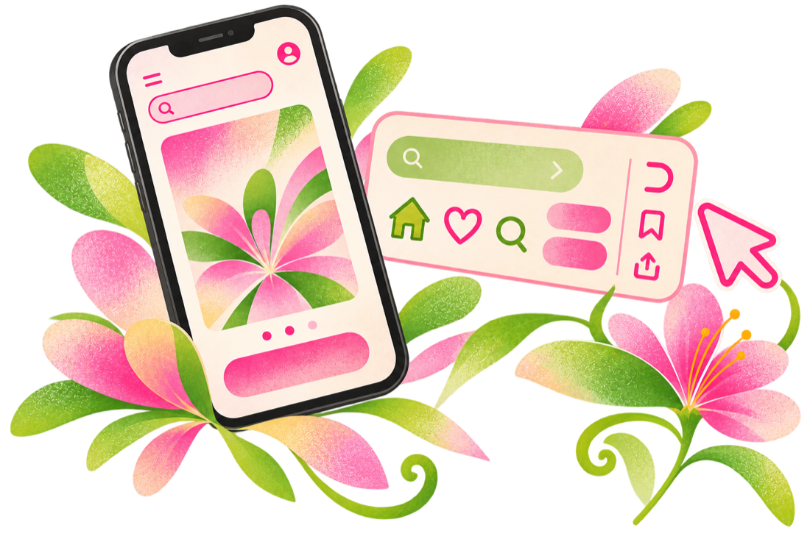
-
Etapa 04
Herramientas creativas
Utilizo diferentes herramientas digitales para desarrollar mis ideas, desde la exploración gráfica hasta el prototipado y el diseño web.
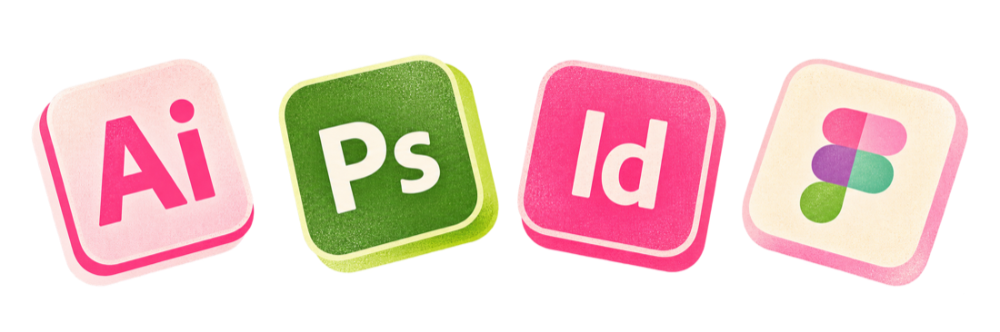
-
Etapa 05
Lo que me gustaría experimentar
Quiero seguir explorando la tipografía, la imagen, los sistemas visuales y nuevas formas de interacción para crear experiencias que vayan más allá de lo convencional.
“Más allá de lo convencional.”
Cierre
Seguir creando, seguir explorando.
Porque mi proceso creativo sigue cambiando con cada proyecto.
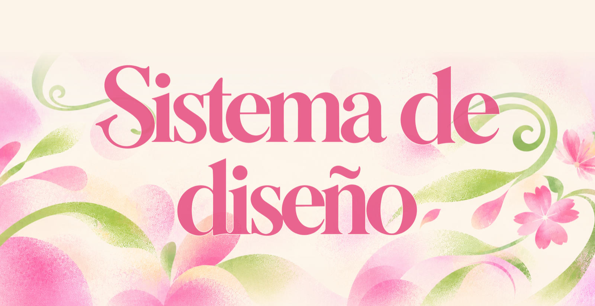
Sistema de diseño
Detrás de lo visual
Explora los colores, formas y decisiones que construyen mi identidad visual. Es una página aparte, pero comparte la misma mirada: rosa, verde lima, formas orgánicas y mucho aire.
Explora mi sistema de diseño04 — Contacto
¿Creamos algo juntos?
Cuéntame tu idea y busquemos cómo darle forma.